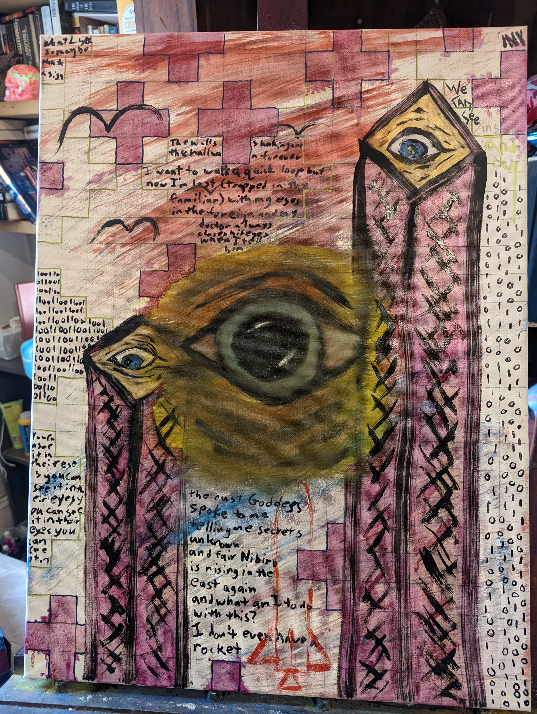

Between 2014 and 2022, I lived inside the storm. This is not a passive linear book of verse. Madness is branched. Chemistry is branched. Every morning and every evening presents a fork in the road.
Step directly inside the emergency telemetry of a mind navigating bipolar cycles, motel desk insomnia, and the long journey toward chemical and somatic equilibrium.
Take your meds, or don't. Drive seventy miles per hour into the rain, or hunker down with a stone from home. Turn the page to discover where your timeline bends.
